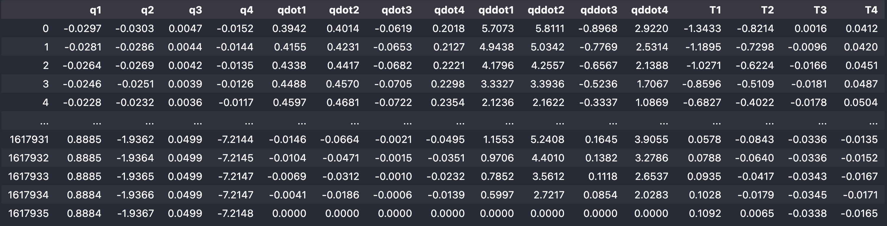
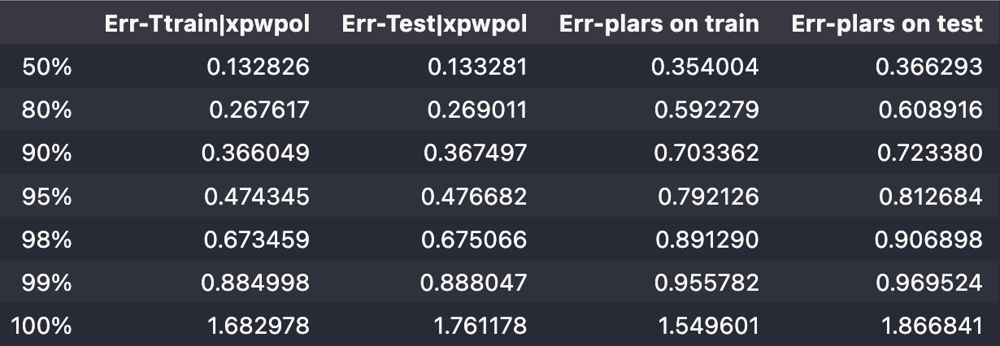
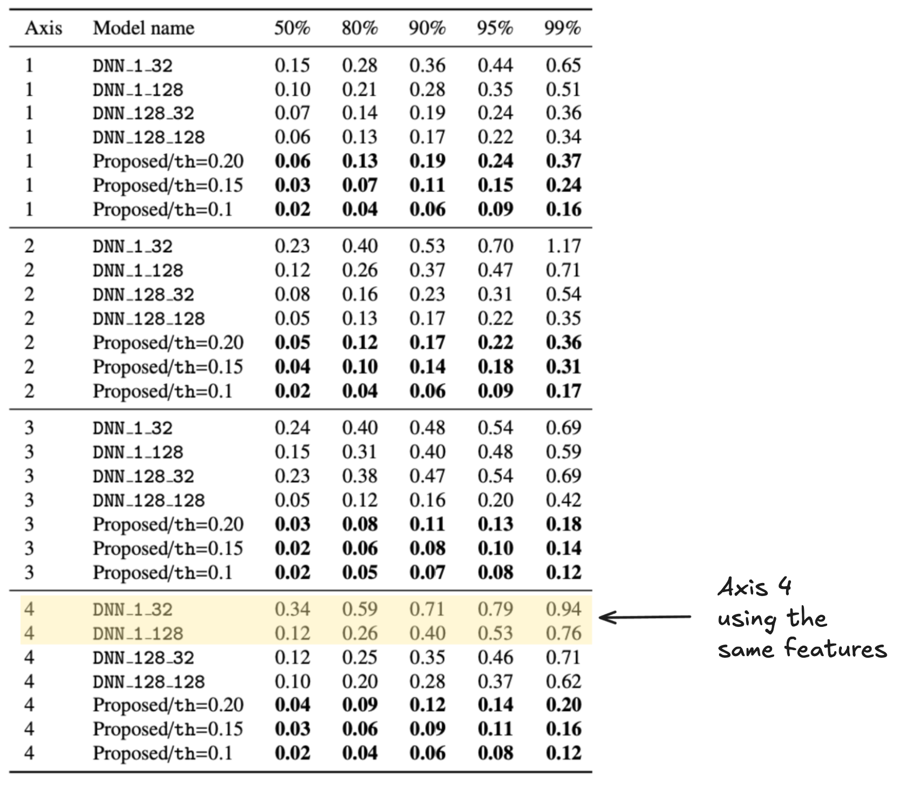
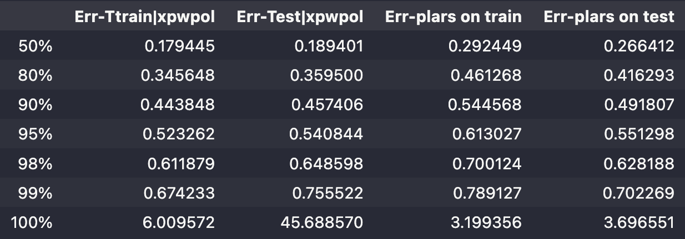

xpwpol
Explicit piece-wise polynomial relationship for an industrial robot.
In this section, we consider the same robot invoked in the plars use-case where we used a single multivariate polynomial to capture the realtionship between the torque and the kinematic features of a 4-axis manipulator robot.
In this section, comparisons are provided, in terms of the prediction error, between the explicit piece-wise polynomial structure and the following two modeling alternatives:
the
plarsmodule providing an approximation using a single multivariate polynomial in the features vector.the DNN-GRU structure as presented in Alamir & Clavel (2025)
These comparisons are provided in order to assess the relevance of the piece-wise polynomial strucutre handled by the xpwpol module.
For the sake of easiness of reading, we repeat some of the information given in the above cited section.

1 Dataset
We have the following dataframe representing the recording of kinematic variables and the torques at the axis joints:
\[ \{q_i\}_{i=1}^4,\quad \{\dot q_i\}_{i=1}^4, \quad\{\ddot q_i\}_{i=1}^4,\quad \{T_i\}_{i=1}^4 \]
of a 4-axis manipulator robot.

2 Problem statement
Find a sparse explicit piece-wise polynomial relationship of the form given by Equation 1, that provides a prediction of the torque applied to axis \(i\in \{1,\dots,4\}\): \[ T_i \approx P_{\mathcal R(x)}\Bigl(x\Bigr)\quad \vert\quad x:= \begin{bmatrix} q\cr \dot q\cr \ddot q \end{bmatrix}\in \mathbb R^{12} \tag{1}\] where \(\mathcal R(x): \mathbb R^{12}\rightarrow \{1,\dots, n_r\}\) is a region map associating to each value of the vector of features \(x\), a region number.
\(n_r\) stands for the number of regions (and hence polynomials) involved in the explicit piece-wise solution.
3 Scripts & results
For illustration purposes, the results concerning axis 3 and 4 are given with comparison to the plars and the DNN-GRU models.
3.1 Results for axis 4
# Choose the axis and the split ratio
axe = 4
test_size=0.8
# Compute Xtrain, Xtest, ytrain, ytest
X = df[colX].values
y = df[colY[axe-1]].values
nTrain = int(len(X)*(1-test_size))
Xtrain = X[0:nTrain]
ytrain = y[0:nTrain]
Xtest = X[nTrain:]
ytest = y[nTrain:]# Parameter helping the design of the different regions
nDiv = np.array([2,2,2,2])
# Create an instance of the class Xpwpol
# Notice the similarity with plars instantiation
xpwpol = Xpwpol(window=2000,
deg=2,
nModels=20,
nModes=20,
eps=0.05,
nDiv=nDiv)
# Fit the solution
xpwpol.fit(Xtrain, ytrain)
1/16 | 0 |0.55 |ncoef = 10 | nrows = 21496 |avg-error = 0.55 |
2/16 | 1 |0.38 |ncoef = 16 | nrows = 16608 |avg-error = 0.47 |
3/16 | 2 |0.54 |ncoef = 29 | nrows = 18498 |avg-error = 0.50 |
4/16 | 3 |0.35 |ncoef = 38 | nrows = 19911 |avg-error = 0.46 |
5/16 | 4 |0.52 |ncoef = 50 | nrows = 18854 |avg-error = 0.47 |
6/16 | 5 |0.39 |ncoef = 64 | nrows = 19002 |avg-error = 0.46 |
7/16 | 6 |0.58 |ncoef = 77 | nrows = 21222 |avg-error = 0.48 |
8/16 | 7 |0.33 |ncoef = 82 | nrows = 26202 |avg-error = 0.45 |
9/16 | 8 |0.58 |ncoef = 89 | nrows = 26642 |avg-error = 0.47 |
10/16 | 9 |0.55 |ncoef = 106 | nrows = 20341 |avg-error = 0.48 |
11/16 | 10 |0.64 |ncoef = 116 | nrows = 17897 |avg-error = 0.49 |
12/16 | 11 |0.39 |ncoef = 124 | nrows = 20400 |avg-error = 0.48 |
13/16 | 12 |0.60 |ncoef = 131 | nrows = 20820 |avg-error = 0.49 |
14/16 | 13 |0.44 |ncoef = 141 | nrows = 18030 |avg-error = 0.49 |
15/16 | 14 |0.73 |ncoef = 150 | nrows = 16364 |avg-error = 0.50 |
16/16 | 15 |0.40 |ncoef = 160 | nrows = 21300 |avg-error = 0.49 | from plars import normalized_error
ypred = xpwpol.predict(Xtest)
dfTest = normalized_error(ytest, ypred)
ypred = xpwpol.predict(Xtrain)
dfTrain = normalized_error(ytrain, ypred)
dfResult = pd.concat([dfTrain, dfTest], axis=1)
dfResult.columns = ['Err-Ttrain', 'Err-Test']
dfResult
Err-Ttrain Err-Test
50% 0.132826 0.133281
80% 0.267617 0.269011
90% 0.366049 0.367497
95% 0.474345 0.476682
98% 0.673459 0.675066
99% 0.884998 0.888047pl = PLARS(window=2000, deg=3, nModels=20, nModes=20, eps=0.05)
nTrain = int(len(X)*(1-test_size))
sol = pl.fit(Xtrain, ytrain)
yhat_pol_train = predict(Xtrain, sol)
dfplars_train = normalized_error(ytrain, yhat_pol_train)
yhat_pol_test = predict(Xtest, sol)
dfplars_test = normalized_error(ytest, yhat_pol_test)
dfResult = pd.concat([dfResult, dfplars_train, dfplars_test], axis=1)
dfResult.columns = ['Err-Ttrain|xpwpol',
'Err-Test|xpwpol',
'Err-plars on train',
'Err-plars on test']
dfResult
plars and the xpwpol module of the MizoPol package.As for the statistics of the DNN-GRU model (Alamir & Clavel (2025)), they are given in the figures below:

Notice that the number of parameters used by the xpwpol module is equal to 160 parameters and the computation time is less than 60 sec.
The precision of the model provided by xpwpol is largely better than the one provided by the plars and is slightly better than the one provided by the DNN-GRU model while the computation time is totally out of comparison.
Moreover, the number of parameters involved clearly shows that we are in the presence of sparse and hence robust solution.
3.2 Results for axis 3
# Choose the axis and the split ratio
axe = 3
test_size=0.25
# Compute Xtrain, Xtest, ytrain, ytest
X = df[colX].values
y = df[colY[axe-1]].values
nTrain = int(len(X)*(1-test_size))
Xtrain = X[0:nTrain]
ytrain = y[0:nTrain]
Xtest = X[nTrain:]
ytest = y[nTrain:]# Parameter helping the design of the different regions
nDiv = np.array([2,2,2,2])
# Create an instance of the class Xpwpol
# Notice the similarity with plars instantiation
xpwpol = Xpwpol(window=2000,
deg=4,
nModels=20,
nModes=20,
eps=0.05,
nDiv=nDiv)
# Fit the solution
xpwpol.fit(Xtrain, ytrain)
from xpwpol import Xpwpol
nDiv = np.array([2,2,2,2])
xpwpol = Xpwpol(window=2000,
deg=4,
nModels=20,
nModes=20,
eps=0.05,
nDiv=nDiv)
xpwpol.fit(Xtrain,
ytrain,
compute_contributions=True,
colNames=colX)
1/16 | 0 |0.36 |ncoef = 243 | nrows = 73252 |avg-error = 0.36 |
2/16 | 1 |0.90 |ncoef = 505 | nrows = 65127 |avg-error = 0.62 |
3/16 | 2 |0.38 |ncoef = 739 | nrows = 76105 |avg-error = 0.53 |
4/16 | 3 |0.89 |ncoef = 988 | nrows = 81846 |avg-error = 0.63 |
5/16 | 4 |0.37 |ncoef = 1230 | nrows = 75433 |avg-error = 0.58 |
6/16 | 5 |0.86 |ncoef = 1472 | nrows = 77318 |avg-error = 0.63 |
7/16 | 6 |0.38 |ncoef = 1726 | nrows = 74982 |avg-error = 0.59 |
8/16 | 7 |0.89 |ncoef = 1975 | nrows = 82663 |avg-error = 0.63 |
9/16 | 8 |0.39 |ncoef = 2236 | nrows = 84477 |avg-error = 0.60 |
10/16 | 9 |0.84 |ncoef = 2487 | nrows = 73981 |avg-error = 0.62 |
11/16 | 10 |0.40 |ncoef = 2746 | nrows = 73550 |avg-error = 0.60 |
12/16 | 11 |0.90 |ncoef = 2993 | nrows = 78388 |avg-error = 0.63 |
13/16 | 12 |0.39 |ncoef = 3249 | nrows = 82354 |avg-error = 0.61 |
14/16 | 13 |0.91 |ncoef = 3486 | nrows = 74784 |avg-error = 0.63 |
15/16 | 14 |0.42 |ncoef = 3722 | nrows = 66573 |avg-error = 0.62 |
16/16 | 15 |0.92 |ncoef = 3979 | nrows = 72619 |avg-error = 0.64 | from plars import normalized_error
ypred = xpwpol.predict(Xtest)
dfTest = normalized_error(ytest, ypred)
ypred = xpwpol.predict(Xtrain)
dfTrain = normalized_error(ytrain, ypred)
dfResult = pd.concat([dfTrain, dfTest], axis=1)
dfResult.columns = ['Err-Ttrain', 'Err-Test']
dfResult
Err-Ttrain Err-Test
50% 0.179445 0.189401
80% 0.345648 0.359500
90% 0.443848 0.457406
95% 0.523262 0.540844
98% 0.611879 0.648598
99% 0.674233 0.755522pl = PLARS(window=2000, deg=4, nModels=20, nModes=20, eps=0.05)
nTrain = int(len(X)*(1-test_size))
sol = pl.fit(Xtrain, ytrain)
yhat_pol_train = predict(Xtrain, sol)
dfplars_train = normalized_error(ytrain, yhat_pol_train)
yhat_pol_test = predict(Xtest, sol)
dfplars_test = normalized_error(ytest, yhat_pol_test)
dfResult = pd.concat([dfResult, dfplars_train, dfplars_test], axis=1)
dfResult.columns = ['Err-Ttrain|xpwpol',
'Err-Test|xpwpol',
'Err-plars on train',
'Err-plars on test']
dfResult
plars and the xpwpol module of the MizoPol package.As for the statistics of the DNN-GRU model (Alamir & Clavel (2025)), they are given in the figures below:

Notice that the number of parameters used by the xpwpol module is around 4000 parameters and the computation time is less than 180 sec.